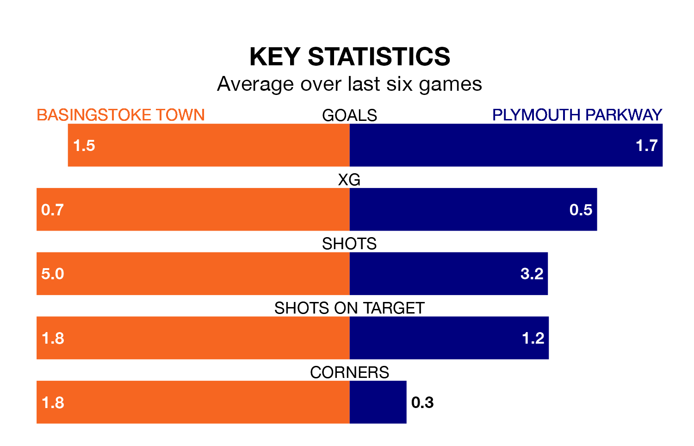

Basingstoke Town host Plymouth Parkway on Saturday in the Southern League Premier South.
In their last league match, on February 17, Basingstoke beat Poole Town 1-0 away.
Plymouth Parkway lost, 1-0 at home against Beaconsfield Town on January 30.
With 56 goals in 32 games so far this season, Basingstoke are scoring more than average in the league with 1.8 goals per game. But they are conceding more than average too, letting in 69 goals at a rate of 2.2 per game.
Plymouth Parkway, meanwhile, are average scorers, with 1.7 goals per game. They have conceded 1.4 goals per game.
The away team are 18th in the table after 23 games, of which they have won eight and drawn seven, earning 31 points.
Town are six places ahead of Plymouth Parkway in 12th, with 11 wins and seven draws putting them on 40 points.
The hosts are in reasonable form in the Southern League Premier South, with four wins and two losses from their last six games.
With two wins and three draws over that period, Plymouth Parkway's form is worse – they have taken nine points from 18, compared to Basingstoke's 12.
Updated: 10:08 (UTC), 23/02/24